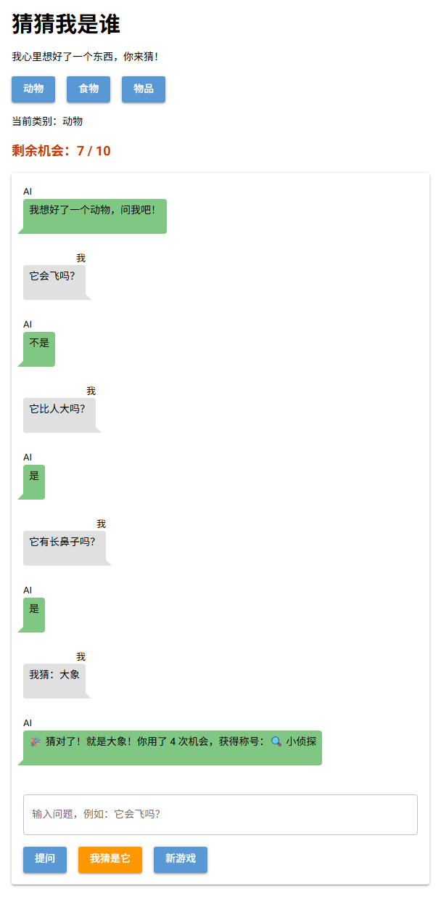
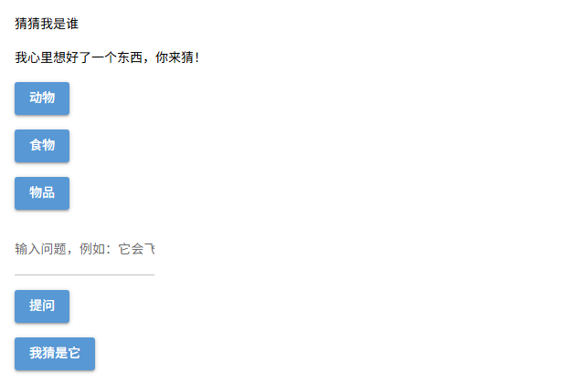
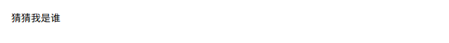
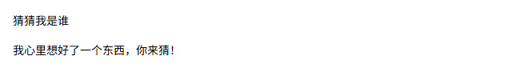
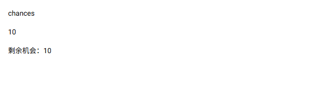
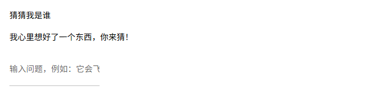

项目 · 「猜猜我是谁」AI 游戏
你玩过这个游戏吗？一个人心里想好一样东西，另一个人只能问「是不是」的问题——「它会飞吗？」「它比书包大吗？」——用尽量少的问题猜出答案。
这一次，坐在你对面的不是人，而是一个 AI。游戏一开始，电脑悄悄选好一个东西，只告诉 AI。AI 知道答案，但它只能回答「是」「不是」「不确定」。你有 10 次机会，每问一个问题、每猜错一次，都会用掉一次。
这个游戏现在还不存在。接下来 8 课，你要亲手把它写出来。

第 8 课结束时，你写出来的游戏就是这样（真实运行截图）
第 1 课任务
今天在一个新文件 guess_who.py 里，分 4 步写出下面这个界面，第 5 步练习排查常见错误。这个文件以后每节课都会接着改，最后变成完整的游戏。

本课完成后的界面（按钮暂时点不动，第 2 课再接上）
| 步骤 | 加上什么 | 新学的代码 |
|---|---|---|
| 第 1 步 | 让网页跑起来，显示标题 | import、ui.run() |
| 第 2 步 | 说明文字 | ui.label |
| 第 3 步 | 提问输入框 | ui.input |
| 第 4 步 | 类别按钮、提问按钮 | ui.button + 循环 |
| 第 5 步 | 排错 | 读懂报错信息 |
第 1 步 · 让网页跑起来
NiceGUI 是一个 Python 第三方库，用来写网页界面：调用一个函数，网页上就生成一个组件（文本、按钮、输入框等）。
| 代码 | 作用 | 英文意思 |
|---|---|---|
pip install nicegui | 在终端里安装 NiceGUI，一台电脑只需装一次 | install = 安装 |
from nicegui import ui | 导入 ui 模块，每个程序第一行都要写 | import = 导入 |
ui.run() | 启动网页服务器并打开浏览器，写在最后一行 | run = 运行 |
新建 guess_who.py，写入：
from nicegui import ui
ui.label("猜猜我是谁")
ui.run()点 VS Code 右上角 ▶ 运行，浏览器会自动打开 http://localhost:8080：

| 操作 | 怎么做 |
|---|---|
| 修改代码 | 改完按 Ctrl + S 保存，网页自动刷新，不用重新运行 |
| 停止程序 | 点击终端，按 Ctrl + C（只关浏览器，程序还在运行） |
Q1如果删掉最后一行 ui.run() 再运行，会怎样？先猜，再动手试
第 2 步 · 加说明文字
ui.label：文本组件| 代码 | 网页上出现什么 | 英文意思 |
|---|---|---|
ui.label("你好") | 一行文本：你好 | label = 标签 |
第 1 步的标题用的就是它。现在在标题下面再加一行说明：
from nicegui import ui
ui.label("猜猜我是谁")
ui.label("我心里想好了一个东西，你来猜！")
ui.run()
组件默认从上到下排列，顺序和代码顺序一致
难点：文字必须加引号
加了引号是字符串（string），原样显示；不加引号，Python 会把它当成变量名去找。例子：
ui.label("猜猜我是谁") # 正确：显示 猜猜我是谁
ui.label(猜猜我是谁) # 报错：NameError: name '猜猜我是谁' is not definedQ2以后游戏里要显示剩余机会。下面三行，网页上依次显示什么？
chances = 10
ui.label("chances")
ui.label(chances)
ui.label(f"剩余机会：{chances}")
Q3小明写成了 ui.label(猜猜我是谁)，运行后会怎样？
第 3 步 · 加提问输入框
ui.input：输入框组件| 代码 | 网页上出现什么 | 英文意思 |
|---|---|---|
ui.input(placeholder="请输入") | 一个输入框，没输入时显示灰色的"请输入" | input = 输入 placeholder = 占位文字 |
from nicegui import ui
ui.label("猜猜我是谁")
ui.label("我心里想好了一个东西，你来猜！")
ui.input(placeholder="输入问题，例如：它会飞吗？")
ui.run()
输入框默认较窄，占位文字显示不全是正常的，第 3 课学排版时再调宽
难点：placeholder= 为什么要写出名字？
输入框有好几个可设置的参数，placeholder="..." 这种"参数名=值"的写法叫关键字参数，用来指明设置的是哪一项。占位文字只是提示，玩家一打字它就消失，不会被当成输入的内容。
Q4把 ui.input(...) 这一行移到 ui.label("猜猜我是谁") 的上面，网页会怎样？先猜，再动手试
第 4 步 · 加按钮
ui.button：按钮组件| 代码 | 网页上出现什么 | 英文意思 |
|---|---|---|
ui.button("开始") | 一个按钮，上面写着"开始" | button = 按钮 |
游戏需要三个类别按钮（动物、食物、物品），还有"提问""我猜是它"两个按钮。类别按钮用列表 + for 循环生成：
from nicegui import ui
ui.label("猜猜我是谁")
ui.label("我心里想好了一个东西，你来猜！")
categories = ["动物", "食物", "物品"]
for c in categories:
ui.button(c)
ui.input(placeholder="输入问题，例如：它会飞吗？")
ui.button("提问")
ui.button("我猜是它")
ui.run()难点：用循环生成组件
循环体每执行一次，就调用一次 ui.button(c)，网页上就多一个按钮。列表有 3 个元素，就生成 3 个按钮。以后要加类别，只需改列表，不用多写 ui.button。
ui.button("start") 显示为 START，中文不受影响。Q5把列表改成下面这样，网页上一共有几个按钮？
categories = ["动物", "食物", "物品", "地点"]
for c in categories:
ui.button(c)
ui.input(placeholder="输入问题，例如：它会飞吗？")
ui.button("提问")
ui.button("我猜是它")Q6在 guess_who.py 里动手改：在类别按钮的后面、输入框的前面，加一个"新游戏"按钮。
改完保存，看网页上"新游戏"是不是出现在"物品"和输入框之间。
参考答案
categories = ["动物", "食物", "物品"]
for c in categories:
ui.button(c)
ui.button("新游戏") # 写在循环外面，不缩进
ui.input(placeholder="输入问题，例如：它会飞吗？")注意 ui.button("新游戏") 不能缩进。如果缩进到循环里，它会跟着循环执行 3 次，出现 3 个"新游戏"按钮。
第 5 步 · 排错
Q7运行后终端报错了，问题出在哪里？
from nicegui import ui
ui.lable("猜猜我是谁")
ui.run()AttributeError: module 'nicegui.ui' has no attribute 'lable'. Did you mean: 'table'?第 5 步 · 排错
Q8这段代码报错了，问题出在哪里？
1 from nicegui import ui
2
3 ui.label("猜猜我是谁")
4 ui.button("提问"
5
6 ui.run() File "guess_who.py", line 4
ui.button("提问"
^
SyntaxError: '(' was never closed🎉
游戏界面已经搭好。选择题一次答对 0 / 0。
| 代码 | 作用 |
|---|---|
from nicegui import ui | 导入 NiceGUI 的 ui 模块 |
ui.label("...") | 文本组件 |
ui.input(placeholder="...") | 输入框组件，placeholder 是占位文字 |
ui.button("...") | 按钮组件 |
ui.run() | 启动网页服务器，写在最后一行 |
两条规律：代码顺序 = 组件排列顺序；变量、循环等学过的 Python 都可以用来生成组件。
下一课预告
现在点击按钮还没有反应。第 2 课，你要让按钮响应点击：点一下"提问"，程序读出输入框里的问题，并在网页上显示出来。